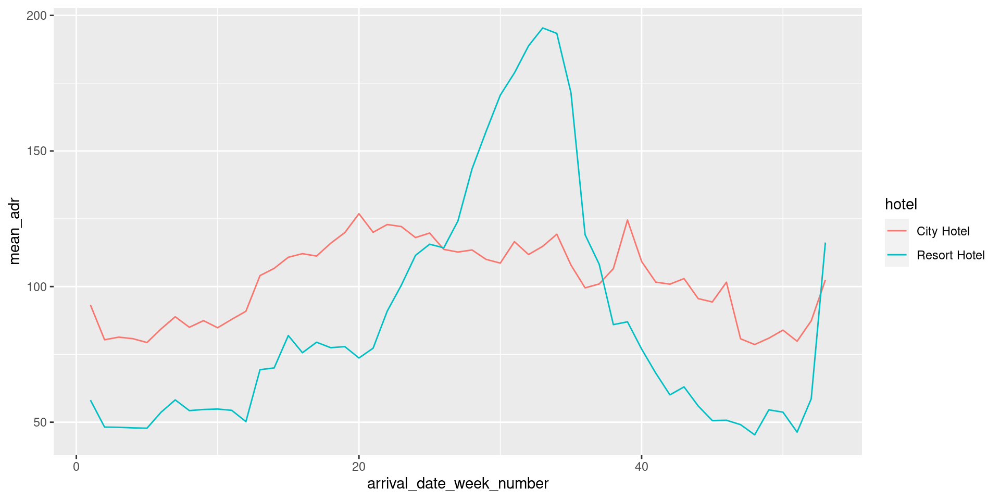

Rows: 119390 Columns: 32
── Column specification ────────────────────────────────────────────────────────
Delimiter: ","
chr (13): hotel, arrival_date_month, meal, country, market_segment, distrib...
dbl (18): is_canceled, lead_time, arrival_date_year, arrival_date_week_numb...
date (1): reservation_status_date
ℹ Use `spec()` to retrieve the full column specification for this data.
ℹ Specify the column types or set `show_col_types = FALSE` to quiet this message.W#4 Data import, data wrangling
Our toolkit
Programming languages
Systems of rules which can process instructions to be executed by the computer.
Our programming languages are:

In R with function:
We can use R and python in a standard terminal (write R or python3) and write scripts with any editor (Wordpad).
Integrated development environment
IDEs provide terminals, a source code editor, an object browser, output and help view, tools for rendering and version control, and more to help in the workflow. Our IDEs are:
 VS Code
VS Code
Publishing system
Weaves together text and code to produces good-looking formatted scientific or technical output.


A YAML header and Markdown text with code chunks is rendered to a document in several formats.
 notebook is a similar concept: text and executable code mixed together in a browser tab. Can be rendered by quarto. Popular in the python world.
notebook is a similar concept: text and executable code mixed together in a browser tab. Can be rendered by quarto. Popular in the python world.
Publish what?
- your project report as (html)
- make a personal website (using GitHub pages)
- write your thesis (pdf)
Feedback on Homework 01
Some of you did not modify the line
“The dimension with the most experience is … The dimension with the least experience is …”
or did not replace the line
“Remove this text and write you answer to Exercise 4.”
with your text.
You did the programming right, but forgot the textual part. Now, this doesn’t matter. However, the learning goal was not only programming, but also taking care that the rendered output communicates your work well.
Version control


git manages local versioning of files in a directory1 as repository2, and merging different versions of the repository.
GitHub provides git server for repositories and collaborative tools.
Command line interfaces
In CLIs you communicate with your computer using the Read-Evaluate-Print-Loop (REPL). Terminal, Shell, Console all mostly synonym to CLI
- Terminal to access files and programs via commands in bash or zsh1. Also available in RStudio and VS Code.
- R console provided in RStudio2
- python3 console provided by VS Code3
Feedback on version control
Using git and GitHub is one of the most common modes of collaboration involving coding
It is a learning goal to get used to it
It will probably not go away after this course
git problems are sometimes uncomfortable to solve and require concentration and grit (also for experienced people)
quarto and git only use the CLI
For example:
quarto render MyFile.qmd --to docx renders the MyFile.qmd to a Word file git add MyFile.qmd adds MyFile.qmd (or ots changes) to the staging area
git commit -m "Update of code" creates new commit with staged files
git push merge local commit into repository it was cloned from
RStudio/VS Code provide buttons and shortcuts for the most common commands
You can also do it yourself.
Use it to solve a problem in an “uncommon” situation, after research about the problem:
- read error message carefully (often they give a hint, but not always)
- searching StackOverflow
- asking others
- filing an issue in our General Discussion
Data Import - short version
readr and readxl

read_csv()- comma delimited filesread_csv2()- semicolon delimited files (common where “,” is used as decimal place)read_tsv()- tab delimited filesread_delim()- reads in files with any delimiter- …

read_excel()read xls or xlsx files from MS Excel- …
Other data formats
R packages, analog libraries will exist for python
- googlesheets4: Google Sheets
- haven: SPSS, Stata, and SAS files
- DBI, along with a database specific backend (e.g. RMySQL, RSQLite, RPostgreSQL etc): allows you to run SQL queries against a database and return a data frame
- jsonline: JSON
- xml2: xml
- rvest: web scraping
- httr: web APIs
- …
Comma-separated values (CSV)
We use this when there is no certain reason to do otherwise (it is not provided, or storage is an issue).
CSV files are delimited text file
- Can be viewed with any text editor
- Show each row of the data frame in a line
- Separates the content of columns by commas (or the delimiter character)
- Each cell could be surrounded by quotes (when long text with commas (!) is in cells)
- The first line is interpreted as listing the variable names by default
readr tries to guess the data type of variables
You can also customize it yourself!
Data import workflow
You download your CSV file to the
data/directory. You may usedownload.file()for this, but make sure you do not download large amounts of data each time you render your file! (Comment out#and use again only when needed.)Read the data with
data <- read_csv("data/FILENAME.csv")and read the report in the console.Explore if you are happy and iterate by customizing you data import line using specifications (see the function help) until the data is as you want it to be.
Use this for Homework 02 for the ESS and corona projects.
Self-learning:
Columns types
| type function | data type |
|---|---|
col_character() |
character |
col_date() |
date |
col_datetime() |
POSIXct (date-time) |
col_double() |
double (numeric) |
col_factor() |
factor |
col_guess() |
let readr guess (default) |
col_integer() |
integer |
col_logical() |
logical |
col_number() |
numbers mixed with non-number characters |
col_numeric() |
double or integer |
col_skip() |
do not read |
col_time() |
time |
Data: Hotel bookings
- Data from two hotels: one resort and one city hotel
- Observations: Each row represents a hotel booking
Data Wrangling
Grammar of Data Wrangling

In python: Similar concept making a chain using . to apply pandas methods for data frames one after the other.
Compare the grammar of graphics ggplot2: Start creating a ggplot object, specifying data, and mapping variables to aesthetics, add graphical layers (geom_ functions) with +
dplyr uses verbs to manipulate
select: pick columns by namearrange: reorder rowsslice: pick rows using index(es)filter: pick rows matching criteriadistinct: filter for unique rowsmutate: add new variablessummarise: reduce variables to valuesgroup_by: for grouped operations- … (many more)
Why does piping with |> work?
Because every dplyr function takes a data frame as first argument and outputs a (manipulated) data frame.
Back to hotel data: First look
First look on variables names
[1] "hotel" "is_canceled"
[3] "lead_time" "arrival_date_year"
[5] "arrival_date_month" "arrival_date_week_number"
[7] "arrival_date_day_of_month" "stays_in_weekend_nights"
[9] "stays_in_week_nights" "adults"
[11] "children" "babies"
[13] "meal" "country"
[15] "market_segment" "distribution_channel"
[17] "is_repeated_guest" "previous_cancellations"
[19] "previous_bookings_not_canceled" "reserved_room_type"
[21] "assigned_room_type" "booking_changes"
[23] "deposit_type" "agent"
[25] "company" "days_in_waiting_list"
[27] "customer_type" "adr"
[29] "required_car_parking_spaces" "total_of_special_requests"
[31] "reservation_status" "reservation_status_date" Second look glimpse
Rows: 119,390
Columns: 32
$ hotel <chr> "Resort Hotel", "Resort Hotel", "Resort…
$ is_canceled <dbl> 0, 0, 0, 0, 0, 0, 0, 0, 1, 1, 1, 0, 0, …
$ lead_time <dbl> 342, 737, 7, 13, 14, 14, 0, 9, 85, 75, …
$ arrival_date_year <dbl> 2015, 2015, 2015, 2015, 2015, 2015, 201…
$ arrival_date_month <chr> "July", "July", "July", "July", "July",…
$ arrival_date_week_number <dbl> 27, 27, 27, 27, 27, 27, 27, 27, 27, 27,…
$ arrival_date_day_of_month <dbl> 1, 1, 1, 1, 1, 1, 1, 1, 1, 1, 1, 1, 1, …
$ stays_in_weekend_nights <dbl> 0, 0, 0, 0, 0, 0, 0, 0, 0, 0, 0, 0, 0, …
$ stays_in_week_nights <dbl> 0, 0, 1, 1, 2, 2, 2, 2, 3, 3, 4, 4, 4, …
$ adults <dbl> 2, 2, 1, 1, 2, 2, 2, 2, 2, 2, 2, 2, 2, …
$ children <dbl> 0, 0, 0, 0, 0, 0, 0, 0, 0, 0, 0, 0, 0, …
$ babies <dbl> 0, 0, 0, 0, 0, 0, 0, 0, 0, 0, 0, 0, 0, …
$ meal <chr> "BB", "BB", "BB", "BB", "BB", "BB", "BB…
$ country <chr> "PRT", "PRT", "GBR", "GBR", "GBR", "GBR…
$ market_segment <chr> "Direct", "Direct", "Direct", "Corporat…
$ distribution_channel <chr> "Direct", "Direct", "Direct", "Corporat…
$ is_repeated_guest <dbl> 0, 0, 0, 0, 0, 0, 0, 0, 0, 0, 0, 0, 0, …
$ previous_cancellations <dbl> 0, 0, 0, 0, 0, 0, 0, 0, 0, 0, 0, 0, 0, …
$ previous_bookings_not_canceled <dbl> 0, 0, 0, 0, 0, 0, 0, 0, 0, 0, 0, 0, 0, …
$ reserved_room_type <chr> "C", "C", "A", "A", "A", "A", "C", "C",…
$ assigned_room_type <chr> "C", "C", "C", "A", "A", "A", "C", "C",…
$ booking_changes <dbl> 3, 4, 0, 0, 0, 0, 0, 0, 0, 0, 0, 0, 0, …
$ deposit_type <chr> "No Deposit", "No Deposit", "No Deposit…
$ agent <chr> "NULL", "NULL", "NULL", "304", "240", "…
$ company <chr> "NULL", "NULL", "NULL", "NULL", "NULL",…
$ days_in_waiting_list <dbl> 0, 0, 0, 0, 0, 0, 0, 0, 0, 0, 0, 0, 0, …
$ customer_type <chr> "Transient", "Transient", "Transient", …
$ adr <dbl> 0.00, 0.00, 75.00, 75.00, 98.00, 98.00,…
$ required_car_parking_spaces <dbl> 0, 0, 0, 0, 0, 0, 0, 0, 0, 0, 0, 0, 0, …
$ total_of_special_requests <dbl> 0, 0, 0, 0, 1, 1, 0, 1, 1, 0, 0, 0, 3, …
$ reservation_status <chr> "Check-Out", "Check-Out", "Check-Out", …
$ reservation_status_date <date> 2015-07-01, 2015-07-01, 2015-07-02, 20…Data subsetting
Select a sinlge colum
# A tibble: 119,390 × 1
lead_time
<dbl>
1 342
2 737
3 7
4 13
5 14
6 14
7 0
8 9
9 85
10 75
# … with 119,380 more rowsNote: select(hotels, lead_time) is identical.
Select more columns
# A tibble: 119,390 × 2
hotel lead_time
<chr> <dbl>
1 Resort Hotel 342
2 Resort Hotel 737
3 Resort Hotel 7
4 Resort Hotel 13
5 Resort Hotel 14
6 Resort Hotel 14
7 Resort Hotel 0
8 Resort Hotel 9
9 Resort Hotel 85
10 Resort Hotel 75
# … with 119,380 more rowsNote that hotel is a variable, but hotels the data frame object name
Select helper starts_with
# A tibble: 119,390 × 4
arrival_date_year arrival_date_month arrival_date_week_number arrival_date_…¹
<dbl> <chr> <dbl> <dbl>
1 2015 July 27 1
2 2015 July 27 1
3 2015 July 27 1
4 2015 July 27 1
5 2015 July 27 1
6 2015 July 27 1
7 2015 July 27 1
8 2015 July 27 1
9 2015 July 27 1
10 2015 July 27 1
# … with 119,380 more rows, and abbreviated variable name
# ¹arrival_date_day_of_monthBring columns to the front
# A tibble: 119,390 × 32
hotel marke…¹ child…² is_ca…³ lead_…⁴ arriv…⁵ arriv…⁶ arriv…⁷ arriv…⁸ stays…⁹
<chr> <chr> <dbl> <dbl> <dbl> <dbl> <chr> <dbl> <dbl> <dbl>
1 Reso… Direct 0 0 342 2015 July 27 1 0
2 Reso… Direct 0 0 737 2015 July 27 1 0
3 Reso… Direct 0 0 7 2015 July 27 1 0
4 Reso… Corpor… 0 0 13 2015 July 27 1 0
5 Reso… Online… 0 0 14 2015 July 27 1 0
6 Reso… Online… 0 0 14 2015 July 27 1 0
7 Reso… Direct 0 0 0 2015 July 27 1 0
8 Reso… Direct 0 0 9 2015 July 27 1 0
9 Reso… Online… 0 1 85 2015 July 27 1 0
10 Reso… Offlin… 0 1 75 2015 July 27 1 0
# … with 119,380 more rows, 22 more variables: stays_in_week_nights <dbl>,
# adults <dbl>, babies <dbl>, meal <chr>, country <chr>,
# distribution_channel <chr>, is_repeated_guest <dbl>,
# previous_cancellations <dbl>, previous_bookings_not_canceled <dbl>,
# reserved_room_type <chr>, assigned_room_type <chr>, booking_changes <dbl>,
# deposit_type <chr>, agent <chr>, company <chr>, days_in_waiting_list <dbl>,
# customer_type <chr>, adr <dbl>, required_car_parking_spaces <dbl>, …More select helpers
starts_with(): Starts with a prefixends_with(): Ends with a suffixcontains(): Contains a literal stringnum_range(): Matches a numerical range like x01, x02, x03one_of(): Matches variable names in a character vectoreverything(): Matches all variableslast_col(): Select last variable, possibly with an offsetmatches(): Matches a regular expression (a sequence of symbols/characters expressing a string/pattern to be searched for within text)
slice for certain rows
# A tibble: 3 × 32
hotel is_ca…¹ lead_…² arriv…³ arriv…⁴ arriv…⁵ arriv…⁶ stays…⁷ stays…⁸ adults
<chr> <dbl> <dbl> <dbl> <chr> <dbl> <dbl> <dbl> <dbl> <dbl>
1 Resort… 0 737 2015 July 27 1 0 0 2
2 Resort… 0 7 2015 July 27 1 0 1 1
3 Resort… 0 13 2015 July 27 1 0 1 1
# … with 22 more variables: children <dbl>, babies <dbl>, meal <chr>,
# country <chr>, market_segment <chr>, distribution_channel <chr>,
# is_repeated_guest <dbl>, previous_cancellations <dbl>,
# previous_bookings_not_canceled <dbl>, reserved_room_type <chr>,
# assigned_room_type <chr>, booking_changes <dbl>, deposit_type <chr>,
# agent <chr>, company <chr>, days_in_waiting_list <dbl>,
# customer_type <chr>, adr <dbl>, required_car_parking_spaces <dbl>, …filter for rows with certain criteria
# A tibble: 79,330 × 32
hotel is_ca…¹ lead_…² arriv…³ arriv…⁴ arriv…⁵ arriv…⁶ stays…⁷ stays…⁸ adults
<chr> <dbl> <dbl> <dbl> <chr> <dbl> <dbl> <dbl> <dbl> <dbl>
1 City … 0 6 2015 July 27 1 0 2 1
2 City … 1 88 2015 July 27 1 0 4 2
3 City … 1 65 2015 July 27 1 0 4 1
4 City … 1 92 2015 July 27 1 2 4 2
5 City … 1 100 2015 July 27 2 0 2 2
6 City … 1 79 2015 July 27 2 0 3 2
7 City … 0 3 2015 July 27 2 0 3 1
8 City … 1 63 2015 July 27 2 1 3 1
9 City … 1 62 2015 July 27 2 2 3 2
10 City … 1 62 2015 July 27 2 2 3 2
# … with 79,320 more rows, 22 more variables: children <dbl>, babies <dbl>,
# meal <chr>, country <chr>, market_segment <chr>,
# distribution_channel <chr>, is_repeated_guest <dbl>,
# previous_cancellations <dbl>, previous_bookings_not_canceled <dbl>,
# reserved_room_type <chr>, assigned_room_type <chr>, booking_changes <dbl>,
# deposit_type <chr>, agent <chr>, company <chr>, days_in_waiting_list <dbl>,
# customer_type <chr>, adr <dbl>, required_car_parking_spaces <dbl>, …filter for multiple criteria
# A tibble: 175 × 4
hotel adults babies children
<chr> <dbl> <dbl> <dbl>
1 Resort Hotel 2 1 1
2 Resort Hotel 2 1 1
3 Resort Hotel 2 1 1
4 Resort Hotel 2 1 1
5 Resort Hotel 2 1 1
6 Resort Hotel 2 1 1
7 Resort Hotel 2 1 1
8 Resort Hotel 2 1 2
9 Resort Hotel 2 1 2
10 Resort Hotel 1 1 2
# … with 165 more rowsComma-separated conditions are interpreted as all these should be fulfilled.
This is identical to the logical AND &.
hotels |> filter(babies >= 1 & children >= 1)
filter for complexer criteria
# A tibble: 9,332 × 4
hotel adults babies children
<chr> <dbl> <dbl> <dbl>
1 Resort Hotel 2 0 1
2 Resort Hotel 2 0 2
3 Resort Hotel 2 0 2
4 Resort Hotel 2 0 2
5 Resort Hotel 2 0 1
6 Resort Hotel 2 0 1
7 Resort Hotel 1 0 2
8 Resort Hotel 2 0 2
9 Resort Hotel 2 1 0
10 Resort Hotel 2 1 0
# … with 9,322 more rows| is the logical OR. Only one criterion needs to be fulfilled.
Logical operators1
| operator | definition |
|---|---|
< |
less than |
<= |
less than or equal to |
> |
greater than |
>= |
greater than or equal to |
== |
exactly equal to |
!= |
not equal to |
x & y |
x AND y |
x | y |
x OR y |
is.na(x) |
test if x is NA (misssing data) |
!is.na(x) |
test if x is not NA (not missing data) |
x %in% y |
test if x is in y (often used for strings) |
!(x %in% y) |
test if x is not in y |
!x |
not x |
Indexing
Select and filter can also be achieved by indexing.
In R as well as in python.
Select ranges of rows and columns
# A tibble: 3 × 3
arrival_date_month arrival_date_week_number arrival_date_day_of_month
<chr> <dbl> <dbl>
1 July 27 1
2 July 27 1
3 July 27 1You can use any vector (with non-overshooting indexes)
# A tibble: 4 × 4
arrival_date_month arrival_date_week_number arrival_date_day_of_month hotel
<chr> <dbl> <dbl> <chr>
1 July 27 1 Resort …
2 July 27 1 Resort …
3 July 27 1 Resort …
4 October 44 23 City Ho…python is 0-indexed, R is 1-indexed!
python: indexes go from 0 to n-1
R: indexes go from 1 to n
Bew aware!
There is no correct way. For some use cases one is more natural for others the other.
Analog: In mathematics there is an unsettled debate if 0 is the first natural number or 1
Logical indexing with logical vectors
# A tibble: 5 × 2
x y
<chr> <chr>
1 A f
2 B g
3 C h
4 D i
5 E j Logical vectors from conditional statements
Unique combinations, arranging
distinct and arrange
# A tibble: 14 × 2
hotel market_segment
<chr> <chr>
1 City Hotel Aviation
2 City Hotel Complementary
3 City Hotel Corporate
4 City Hotel Direct
5 City Hotel Groups
6 City Hotel Offline TA/TO
7 City Hotel Online TA
8 City Hotel Undefined
9 Resort Hotel Complementary
10 Resort Hotel Corporate
11 Resort Hotel Direct
12 Resort Hotel Groups
13 Resort Hotel Offline TA/TO
14 Resort Hotel Online TA Counting
count
# A tibble: 14 × 3
hotel market_segment n
<chr> <chr> <int>
1 City Hotel Undefined 2
2 Resort Hotel Complementary 201
3 City Hotel Aviation 237
4 City Hotel Complementary 542
5 Resort Hotel Corporate 2309
6 City Hotel Corporate 2986
7 Resort Hotel Groups 5836
8 City Hotel Direct 6093
9 Resort Hotel Direct 6513
10 Resort Hotel Offline TA/TO 7472
11 City Hotel Groups 13975
12 City Hotel Offline TA/TO 16747
13 Resort Hotel Online TA 17729
14 City Hotel Online TA 38748Data Transformation
Create a new variable with mutate
# A tibble: 119,390 × 3
children babies little_ones
<dbl> <dbl> <dbl>
1 10 0 10
2 0 10 10
3 0 9 9
4 2 1 3
5 2 1 3
6 2 1 3
7 3 0 3
8 2 1 3
9 2 1 3
10 3 0 3
# … with 119,380 more rowsMore mutating
# A tibble: 12 × 4
hotel little_ones n prop
<chr> <dbl> <int> <dbl>
1 City Hotel 0 73923 0.619
2 City Hotel 1 3263 0.0273
3 City Hotel 2 2056 0.0172
4 City Hotel 3 82 0.000687
5 City Hotel 9 1 0.00000838
6 City Hotel 10 1 0.00000838
7 City Hotel NA 4 0.0000335
8 Resort Hotel 0 36131 0.303
9 Resort Hotel 1 2183 0.0183
10 Resort Hotel 2 1716 0.0144
11 Resort Hotel 3 29 0.000243
12 Resort Hotel 10 1 0.00000838Summarizing
# A tibble: 1 × 1
mean_adr
<dbl>
1 102.- That shrinks the data frame to one row!
- Don’t forget to name the new variable (here
mean_adr) - You can use any function you can apply to a vector!
(Sometimes you may need to write your own one.)
Grouped operations
# A tibble: 2 × 2
hotel mean_adr
<chr> <dbl>
1 City Hotel 105.
2 Resort Hotel 95.0Look at the grouping attributes:
# A tibble: 119,390 × 32
# Groups: hotel [2]
hotel is_ca…¹ lead_…² arriv…³ arriv…⁴ arriv…⁵ arriv…⁶ stays…⁷ stays…⁸ adults
<chr> <dbl> <dbl> <dbl> <chr> <dbl> <dbl> <dbl> <dbl> <dbl>
1 Resor… 0 342 2015 July 27 1 0 0 2
2 Resor… 0 737 2015 July 27 1 0 0 2
3 Resor… 0 7 2015 July 27 1 0 1 1
4 Resor… 0 13 2015 July 27 1 0 1 1
5 Resor… 0 14 2015 July 27 1 0 2 2
6 Resor… 0 14 2015 July 27 1 0 2 2
7 Resor… 0 0 2015 July 27 1 0 2 2
8 Resor… 0 9 2015 July 27 1 0 2 2
9 Resor… 1 85 2015 July 27 1 0 3 2
10 Resor… 1 75 2015 July 27 1 0 3 2
# … with 119,380 more rows, 22 more variables: children <dbl>, babies <dbl>,
# meal <chr>, country <chr>, market_segment <chr>,
# distribution_channel <chr>, is_repeated_guest <dbl>,
# previous_cancellations <dbl>, previous_bookings_not_canceled <dbl>,
# reserved_room_type <chr>, assigned_room_type <chr>, booking_changes <dbl>,
# deposit_type <chr>, agent <chr>, company <chr>, days_in_waiting_list <dbl>,
# customer_type <chr>, adr <dbl>, required_car_parking_spaces <dbl>, …Grouping, summarizing, visualizing

Where to find help
Resources
- For systemic understanding: Learning resources linked in the syllabus
- R for Data Science
- Chapters 3, 5, 9 (short), 10 (short), 11
- Corresponding chapters in Python Data Science Handbook
- R for Data Science
- For quick overview to get inpiration
- Cheatsheets (find some in RStudio -> Help, other by google)
- ggplot2 Cheatsheet
- dplyr Cheatsheet
- Cheatsheets (find some in RStudio -> Help, other by google)
- For detailed help with a function
- Help file of the function
?FUNCTION-NAME, or search box in Help tab - Reference page on the package webpage
- Help file of the function
Questions
Questions and advice for the homework of starting projects
- Data search
- Any insights about corona data?
- Starting a new quarto markdown document
- What to write into the YAML?
- Data import
- Expect that some customization is needed!
- First graph
You are encouraged to play further!
These projects can be the seed for you Data Science Tools module project.